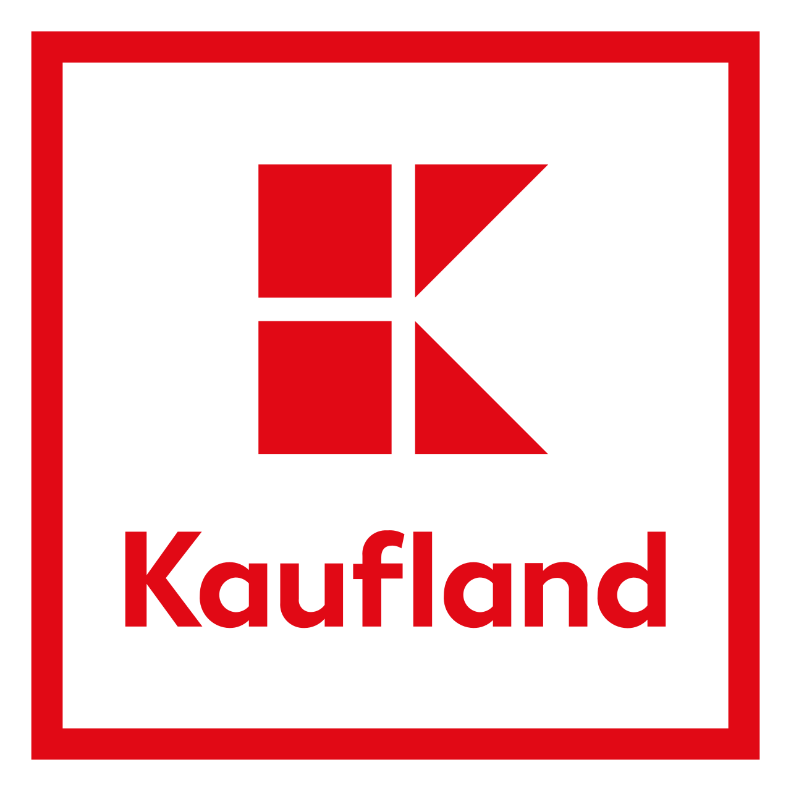
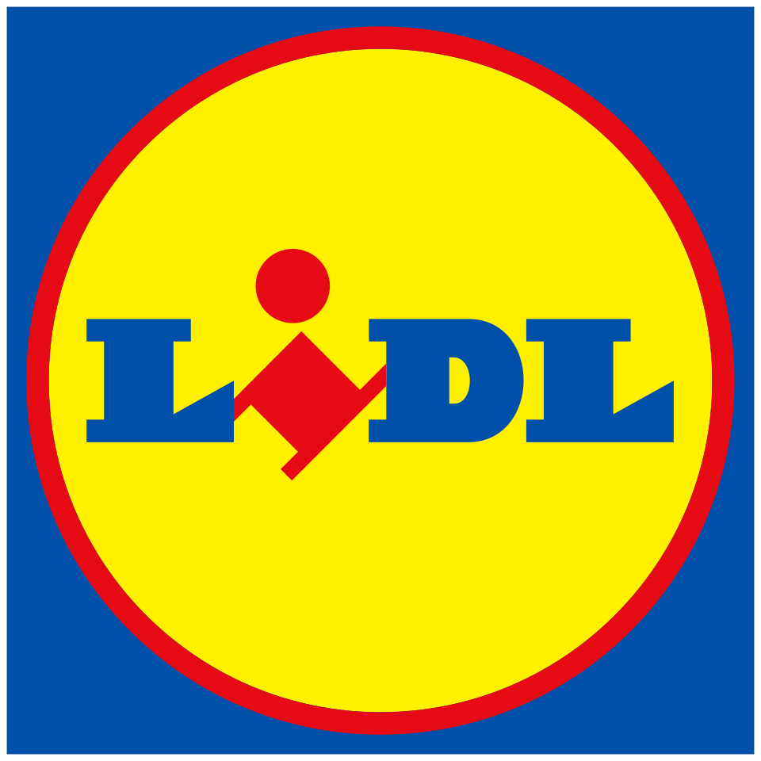

| NR. | Șantier | Locație | Detalii | |||||||||||||
|---|---|---|---|---|---|---|---|---|---|---|---|---|---|---|---|---|
| Echipe | Sarcini | |||||||||||||||
| 1 |
 Kaufland
Kaufland Bistrița
Suprafață: 2500 mp Start: Ian 2026 Manager: Pop Ioan |
Bistrița
Bistrița, Romania
Jud. Bistrița-Năsăud Distanță față de sediu: 92 km |
|
|
||||||||||||
| 2 |
 Lidl
Lidl Cluj-Napoca
Suprafață: 1800 m² Start: Mar 2026 Manager: Pop Ioan |
Cluj
Cluj-Napoca, Romania
Jud. Cluj Distanță față de sediu: 0 km |
|
|
||||||||||||